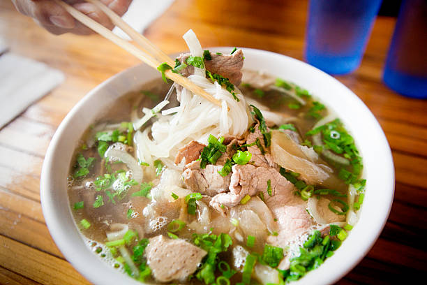

Home

Description:
Everyone loves Pho, but not everyone loves the multi-day process to make
the dish. This recipe will provide a simplified approach that reduces the
prep time from days to hours while maintaining the taste.
Ingredients
- Onion
- Fresh Ginger
- Star anise, whole cloves, cinnamon sticks
- Beef or chicken broth, water
- Fish Sauce, sugar, salt
Steps
-
Char the onion and ginger until they are fragrant and slightly
blackened.
- Toast the whole spices in a dry skillet until fragrant.
- Simmer the broth ingredients for at least 30 minutes.
- Cook the rice noodles according to package directions.
-
Assemble the bowls by adding noodles, your chosen meat, and the hot
broth.
-
Garnish generously with fresh herbs, bean sprouts, and a squeeze of
lime.